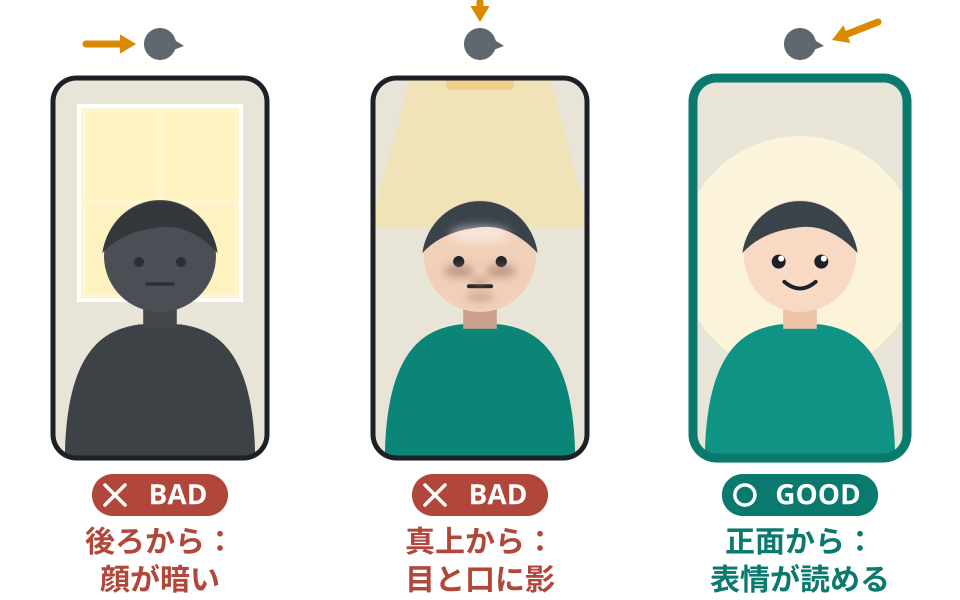
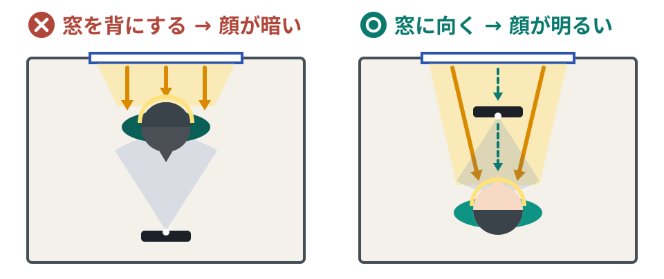
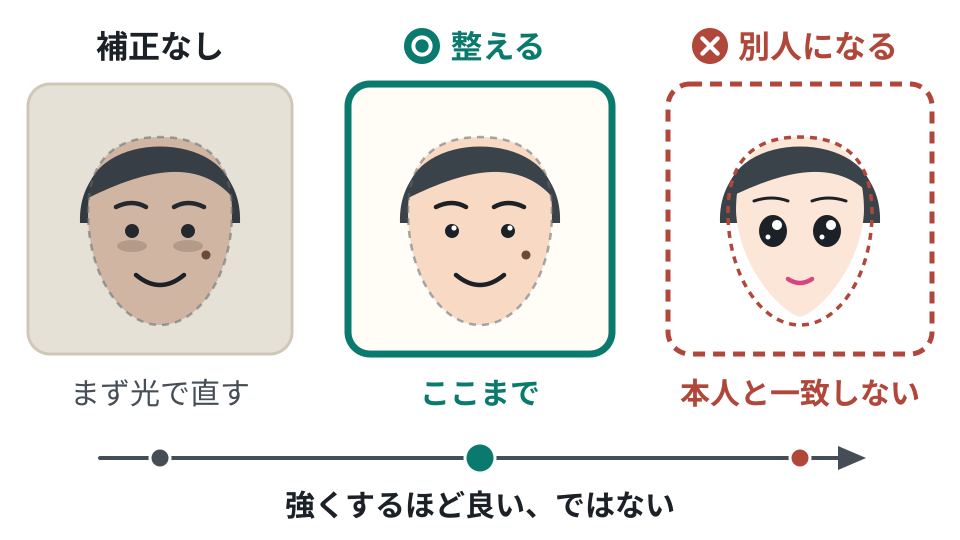

「顔が暗い・影が出る」を今日直す｜光の向き・服・加工の止めどころ
光の向き・影・服・加工を今の部屋で直し、初めて来た人にも表情が伝わる画面にできます。昼は窓の光だけで、夜は家にある明かりで試し、それでも足りないときに足す物を 1 つに絞れます。

この記事で学べること
- 画面映えの物差しは「盛る」より先に「表情が読める」こと
- 昼と夜それぞれで、光の向き・影・レンズ・服を直す手順
- 加工をどこで止めるか。本人と別人にしない線の引き方
この記事を終えると
自分の部屋で試し撮りをして、顔が暗い・影が出る・白く飛ぶ・画面がくもる原因を見つけ、今ある物で直す。それでも残った困りごとを 1 つ、言葉にできるようになる。
目的は「盛る」より「表情が読める」
結論
画面映えで最初に目指すのは、きれいに見えることより先に、笑った、驚いた、困った、が画面ごしにすぐ分かることです。
なぜ大事？
- LIVE は会話です。見ている人は、コメントを打ったあと「この人はどう反応したか」を顔で確かめます。
- 顔が暗い、影が濃い、加工でのっぺりしていると、反応していても伝わりません。人柄が伝わる前に離れられてしまいます。
- 公式の教材も、照明の役割を、画面を明るくするだけでなく、表情を生き生きと見せ、肌の色をきれいに整えることだと説明しています。
場面
初めて来た人が画面を見た数秒間
ソラさんが、おすすめに流れてきた LIVE をたまたま開きました。配信者のことは何も知りません。
画面が開く。配信者は窓を背にしていて、顔が全体に暗い。
配信者は笑って話しているが、ソラさんには口が動いていることしか分からない。
ソラさんは「こんばんは」と打とうか迷う。相手の表情が読めないので、歓迎されるか分からない。
何も打たずに、次の LIVE へ移る。
話の中身が悪かったわけではありません。表情が読めなかったので、話しかけるきっかけが生まれませんでした。
ここが要点
この講座の物差し
迷ったら「きれいに見えるか」の前に、「音を消しても、今どんな気持ちか分かるか」で決めます。光も、服も、加工も、この物差しで選びます。
自分ならどうする？
直近の配信や自撮りの動画を、音を消して見てください。笑った所、驚いた所が、顔だけで分かりますか？
ヒントを見る
分かりにくい所があれば、目のまわり・口元・眉のどこが見えていないかを 1 つ書き出します。
答えの例を見る
目のまわりが暗くて、笑っても目が笑って見えない。
最初に直すのは、光の向き
結論
光は、顔の正面か、正面の少し上から当てます。後ろからの光と、真上だけの光を避けるだけで、顔の見え方は大きく変わります。
なぜ大事？
後ろに窓や強い明かりがあると、顔が暗く沈むか、後ろが真っ白に飛ぶことが多くなります。部屋全体が明るくても、顔に正面から光が当たっていなければ、目と口元は暗いままです。見るのは部屋の明るさではなく、画面に映った顔です。


| 光がここにあったら | こう直す |
|---|---|
| 後ろ（窓や強い明かりを背にしている） | 体の向きを反対にして、光のほうを向く |
| 真上（天井の明かりの真下） | 真下からずれ、正面からの光を足す |
| 横だけ | 体を回して、光を顔の正面寄りにする |
まず正面からの光を試し、今の環境を確かめてから、必要なら道具を足す。この順番で進めます。公式の教材も、高価な機材をそろえなくても少しの工夫で映像の質は上げられる、としています。
やり方
実際に配信する時間帯にやります。昼に窓の光で整えても、夜は同じ見え方になりません。最初にレンズを柔らかい布で拭き、スマホの自分側のカメラ（内カメラ）を縦向きにして、画面を見ながら進めます。
いちばん明るい方向を探す
昼は窓、夜は部屋の明かりやスタンドの明かりです。カメラを顔に向けたまま、その場でゆっくり一回りし、顔がいちばん明るく映る向きで止まります。
その向きで座る場所を決める
光のあるほうにスマホを置き、自分は光に顔を向けて座ります。座る向きを変えたら、後ろに映る物も変わります。前の講座の画面の点検を、この向きでもう一度かけます。
光を目の高さより少し上にする
光が下から当たると、顔の影が上向きに出て不自然に見えます。動かせる明かりなら、目より少し高い位置に上げます。
目に光が入っているかを見る
画面で自分の黒目を見ます。小さな白い点が映っていれば、光が正面から届いています。この白い点はキャッチライトと呼ばれ、目線と目の動きが分かりやすくなります。


| 配信する時間 | 使う光 | 置き方 |
|---|---|---|
| 昼（窓がある） | 窓の光 | 窓に向いて座り、スマホを窓側に置く |
| 夜・動かせる明かりがある | スタンドなどの明かり | 顔の正面、目より少し上に置く。まぶしいときは正面の白い壁に向け、跳ね返った光を顔に当てる |
| 夜・天井の明かりだけ | 天井の明かり | 真下を避け、明かりが自分の前の上にくる位置まで下がって、明かりのほうを向く。机に白い布や紙を置き、あごの下の影を薄くする |
天井の明かりだけでは、目のまわりの影が残ることがあります。そのときは無理に粘らず、「夜、正面の光が足りない」と書き残し、正面に置く明かりを 1 つだけ検討します（最後の章）。
コツ
向きが決まったら、配信に近い画面でも見る
TikTok には、公開せずに映りや音を確かめられる練習用の機能が案内されています（名前や場所は変わることがあります）。配信のアプリでは、カメラの動画と明るさや補正のかかり方が違って見えることがあるので、決めた向きのまま一度確かめます。見つからないときは、スマホの内カメラを縦向きにした確認だけで進めてかまいません。
残った影・白っぽさ・くもりを消す
結論
光の向きを直したあとに残る「片側の影」「白く飛んだ肌」「全体のくもり」「左右で違う肌の色」は、家にある物と、ひと手間で直せることがほとんどです。
| こう映ったら | こう直す |
|---|---|
| 顔の片側やあごの下に影が残る | 暗い側に白い紙・白いタオルを置く。光が白い面で跳ね返り、影が薄くなる。机に白い布を敷くと、あごの下が明るくなる |
| 額や頬が真っ白で、肌の色が消えている（白飛び） | 光が強すぎる。明るいほど良い、ではない。明かりを離す・壁に向ける・レースのカーテンごしにする |
| 画面全体が白くにごっている | レンズの指紋やホコリ。メガネ拭きのような柔らかい布で、配信の前に毎回拭く |
| 顔の左右で肌の色が違う | 窓の光と電球の光が混ざっている。顔に当てる光を 1 種類にする。後ろに置いた飾りの明かりは、顔に当たっていなければ色が違ってもかまわない |
レンズを拭くことは、公式の教材にある内容です。公式は、画質は細かい設定より前に、こうした物としての手入れで大きく変わる、としています。
コツ
話している間に、顔がぼやける人は
公式の教材は、配信中にピント（映像のくっきり具合）がぶれないよう、あらかじめ固定しておくこともすすめています。固定の設定があるかどうかは、端末や配信のしかたで違います。見つからなければ、顔とスマホの距離を変えない、顔の前で手や物を大きく動かさない、の 2 つをまず守ります。
服と髪は、顔の邪魔をしない物を選ぶ
結論
服は、おしゃれかどうかより先に、顔より目立って邪魔をしていないかを見ます。背景に溶けない色、チカチカしない柄、目と眉が見える髪。この 3 つです。
| 見る点 | 避けたい | 選びやすい |
|---|---|---|
| 背景との色 | 壁と同じような色の服。体と背景の境目がなくなる | 背景と反対の系統の色。白い壁なら濃い色、暗い背景なら明るい色 |
| 柄 | 細かいしま模様・細かいチェック。カメラを通すと、波のようにチカチカ揺れて見えることがある（モアレ） | 無地、または大きめの柄 |
| 顔まわり | 前髪や髪で目・眉が隠れる。光るアクセサリーが強く反射する | 目と眉が見える。反射が顔より目立たない |
背景と同じ色を避けること、細かい柄を避けて無地か大きめの柄にすることは、公式の教材が挙げている 2 つの基本です。手持ちの服は、試し撮りで一度確かめます。
コツ
余裕があれば: 変えない所を 1〜2 個決める
前の講座で、同じ物を同じ場所に置くと目印になる、と学びました。見た目も同じ考え方で、変えない所を 1〜2 個決めておくと、前に見た人だと気づいてもらう手がかりになると考えられます。必ずそうなる、という約束ではありません。
「変えない所」と「変えてよい所」の分け方
変えない所の例
髪型の大まかな形、服の色の系統、いつも着ける小さなアクセサリー 1 つ
全部ではなく、1〜2 個で十分です。無理なく続けられるものを選びます。
変えてよい所の例
服そのもの、季節の小物、企画の日の特別な衣装
いつもの形があると、特別な日の変化が「今日は違う」と伝わります。
続かない決め方の例
毎回かならず同じ衣装、手間のかかる髪型を毎回
準備が重くなり、配信そのものが続かなくなります。
やりがち
「飽きられたくない」と思い、毎回、髪型も服の雰囲気も大きく変える
こう直す
髪型と服の色の系統は決めておき、服そのものは替える
なぜ良い？
手がかりが毎回すべて変わると、前に見た人だと気づきにくくなると考えられます。飽きさせない工夫は、まず話や企画の中身で行います。見た目を変えるのは、企画の日の楽しみに取っておけます。
自分ならどうする？
あなたの見た目で「これは毎回変えない」と決められるものを、1 つ挙げてください。
ヒントを見る
新しく買う物ではなく、すでに自然にやっていること、楽に続けられることから選びます。
答えの例を見る
髪は耳にかける。
加工は「整える」まで。別人にしない
結論
美肌やフィルターなどの加工は、暗さやくすみを整える所までにします。顔の形や印象が変わる所まで強くすると、あとで自分が困ります。


| 加工の強さ | 画面での見え方 | 判断 |
|---|---|---|
| 暗さ・くすみを補う | 顔色が明るくなる。眉や口元の動きはそのまま見える | 使ってよい |
| 肌を強くなめらかにする | 肌の凹凸が消え、笑ったときの動きまで見えにくくなる | 弱める。表情が動いて見える所まで戻す |
| 輪郭・目の大きさ・顔の形を変える | ほかの SNS の写真や、実際の顔と違って見える | 使わない |
なぜ大事？
- ほかの SNS で: 気になった人は、ほかの SNS の写真や動画も見に行きます。顔の印象が大きく違うと「どれが本当？」という引っかかりが残ります。
- 毎日の配信で: 強い加工は、顔を動かしたり手が顔の前を通ったりすると、ずれたり外れたりすることがあります。
- 人と直接会う場面で: 画面の顔と違いすぎると、相手は驚きます。本人も、会うのが怖くなることがあります（次の場面）。
場面
ファンと会う初めての催しの前の日
配信者のミナトさんは、いつも輪郭と目を大きく変える加工で配信してきました。所属先が開く、ファンと会う初めての催しが、明日に迫っています。
告知用の写真を撮る。加工なしの写真は、配信の顔とかなり違う。
「がっかりされるかもしれない」と思い、写真も強く加工して投稿する。
当日、会場に向かう足が重い。楽しみだったはずの日が、不安な日になっている。
来てくれた一人は、会場でミナトさんをすぐに見つけられず、声をかけるまでに時間がかかる。
加工が強いほど、活動の場が広がる機会が、うれしい出来事ではなく怖い出来事に変わることがあります。加工した顔のほうを応援されていると感じて、素の自分を出すのが苦しくなる人もいます。最初から「どこで見ても同じ人」でいれば、場を広げるたびに信頼が積み上がります。
やり方
加工の強さは、次の順番で決めます。
加工をいったん切って、光を先に直す
アプリの美肌やフィルターの設定を探し、いったん全部切るか、いちばん弱くします（設定の名前や場所は変わることがあります）。光が足りないまま加工を足すと、暗さを隠すために強くするしかなくなります。
いちばん弱い所から、少しずつ上げる
顔色が整ったと感じた所で止めます。「もう少し」と上げたくなったら、そこで止めます。
話しながら、表情が動いて見えるか確かめる
笑う、驚く、眉を上げる、をやってみます。動きがのっぺりして見えたら、強すぎます。
ほかの SNS の写真と並べる
加工した画面の写真と、ふだん載せている写真を並べ、家族や友人に「同じ人に見える？」と聞きます。聞ける人がいなければ、輪郭と目の大きさが同じかを自分で見ます。迷ったら弱めます。
ここが要点
「加工はマナー」ではなく「見やすく整えるのがマナー」
「加工するのがマナー」と言われることがあります。大事なのは加工そのものではなく、見ている人が表情を読み取りやすい画面にしておくことです。それは、光・レンズ・軽い補正でほとんど足ります。
「加工してる？」と聞かれたとき
雑談の配信中に、初めて来た人からコメントが届きました。
はじめての人肌きれいですね。加工してますか？
- 配信者
ありがとうございます。明るさを少し足してます。顔の形は変えてないので、ほかの写真や動画でもこのままですよ。
はじめての人正直でいいですね。
- 配信者
照明は窓の光だけなんです。今日は天気がいいので助かってます。
ポイント
整える程度の加工なら、聞かれても隠す必要がなく、そのまま会話のきっかけになります。答えに困る強さになっていないか、が線を引く目安です。
買うのは、今の部屋を直したあと
結論
「機材を買えば見え方が良くなり、人が増える」という順番ではありません。今の部屋で直せる所を直し、それでも残った困りごとを 1 つだけ道具で補う、という順番にします。
なぜ大事？
機材は、準備の手間や不便を減らしてくれます。しかし、配信の中身の魅力を作ってはくれません。光の向きが間違ったままなら、道具を足しても影は消えません。
買う前に通る順番
点検する
配信する時間帯・いつもの場所で
買わずに直す
向き・白い面・レンズ
残りを 1 つ書く
例: 夜は正面の光が足りない
その 1 つだけ補う
残らなければ買わない
夜に天井の明かりしか無い部屋では、3 番目に「正面の光」が残ることがよくあります。それは失敗ではなく、買う物が 1 つに絞れた状態です。
用語
言葉だけ知っておく: 3 つの光とリングライト
公式の教材は、本格的な配信での理想として、3 つの光の組み合わせを紹介しています。顔を照らす主役の光（キーライト）、その影を消す光（フィルライト）、人物を背景から切り離して立体感を出す光（バックライト）です。丸い輪の形の明かり（リングライト）の名前も挙がっています。初心者は、主役の光を正面に置くことと、白い面で影を消すことができていれば十分です。
やりがち
人が増えないのは見た目のせいだと思い、点検をしないまま道具をまとめて買う。置き場所は変えず、窓を背にしたまま正面に明かりを足す。
こう直す
試し撮りで「夜の配信だけ、正面の光が足りない」と分かってから、その 1 点を補う物を検討する。
なぜ良い？
何が足りないかを言葉にできていれば、必要な物は 1 つに絞れます。言葉にできないまま買うと、困りごとが残ったまま、物だけが増えます。
自分ならどうする？
いま「買おうかな」と思っている機材はありますか。それは、どの困りごとを直すための物ですか。
ヒントを見る
困りごとを、時間帯と場所を入れて言えなければ、まだ買う段階ではありません。例: 夜、机の前に座ると、顔の右側だけ暗い。
答えの例を見る
正面に置く明かり。夜の配信で、天井の明かりの真下を避けて白い布を置いても、目に光が入らないから。
初心者からプロへ
まずはここまで
光に向いて座る、レンズを拭く、加工は顔色を整える所で止める。この 3 つができていれば十分です。服と「変えない所」は、そのあとで構いません。
慣れてきたら、一段上へ
一段上では、LIVE の顔と、ほかの SNS の写真・宣材写真・舞台や作品での姿が「同じ人」に見えるかをそろえます。事務所などに所属している人は、見た目や加工についての決まりがないかを先に確かめます。公式の教材は、映像の細かさを決める設定（ビットレート）を推奨の値にすることにも触れていますが、具体的な値は示していません。スマホだけで配信するうちは、気にしなくてかまいません。
今日覚える 3 つ
物差しは「音を消しても気持ちが分かるか」。きれいさより先に、表情が読めること。
まず光に向いて座り、レンズを拭く。加工は最後に、顔色を整える所まで。
買うのは、今の部屋で直したあとに残った困りごとを 1 つ言葉にできてから。
ACTION PLAN
次にやること
いつも配信する場所で、スマホの内カメラを縦向きにして動画を撮る。「後ろから光」「真上の明かりだけ」「光に向く」の 3 通りを、同じひと言（自己紹介など）で短く撮り、音を消して見比べる。決めた向きでもう 1 本短く撮り、下の「買う前の点検リスト」に上から印を付ける。印が付かない項目は、項目の下の直し方を試す。
決めた場所で、加工をいったん切った状態から少しずつ上げ、顔色が整った所で止める。その画面の写真と、ほかの SNS に載せている写真を並べ、家族か友人 1 人に「同じ人に見える？」と聞く。聞ける人がいなければ、輪郭と目の大きさが同じかを自分で見る。
次の配信で着る服を着て短く試し撮りし、服が背景に溶けていないか、柄がチカチカしていないか、目と眉が見えているかを見る。余裕があれば、毎回変えない所を 1 つメモに書く。
TOOLS
使える道具
チェックリスト
買う前の点検リスト
実際に配信する時間帯に、いつもの場所で短い動画を撮り、画面を見ながら印を付けます。印が付かない項目は、下の直し方を先に試します。
できたらチェック
書いた内容は、このブラウザの中だけに保存されます
ワークシート
わたしの見え方メモ
点検で決まったことを書き残します。次の配信から、同じ状態をすぐに作れるようにするためのメモです。
例: 夜。机の前。スタンドの明かりを正面の壁に向ける。位置に印を付けるなら、向きが決まったこのときに
例: 机の上に白いタオル
何を、どのくらいの強さで使うか。使わないと決めたものも書く
例: 紺の無地。髪は耳にかける（変えない所は、余裕があれば）
時間帯と場所を入れて書く。例: 夜、正面の光が足りない。なければ「なし」
書いた内容は、このブラウザの中だけに保存されます